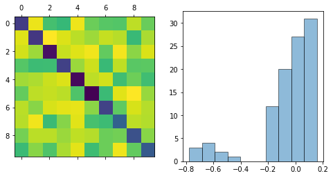

Simulated time series¶

In [1]:
%matplotlib inline
import matplotlib.pyplot as plt
import numpy as np
import pandas as pd
import fem
print 'number of threads: %i' % (fem.fortran_module.fortran_module.num_threads(),)
number of threads: 32
In [2]:
n = 10
w = fem.continuous.model_parameters(n)
In [3]:
fig, ax = plt.subplots(1, 2, figsize=(8,4))
ax[0].matshow(w)
w_flat = w.flatten()
hist = ax[1].hist(w_flat, ec='k', alpha=0.5)
plt.show()

In [4]:
x = fem.continuous.time_series(w, l=1e4)
In [5]:
tab = []
for i in range(n):
tab.append([x[i].min(), x[i].max(), x[i].mean()])
pd.DataFrame(data=tab, columns=['min', 'max', 'average'], index=1+np.arange(n))
Out[5]:
| min | max | average | |
|---|---|---|---|
| 1 | -4.344546 | 4.229992 | 0.002489 |
| 2 | -4.257472 | 3.915364 | -0.007198 |
| 3 | -4.259568 | 4.288349 | -0.005594 |
| 4 | -4.779247 | 4.513722 | -0.006781 |
| 5 | -4.578835 | 4.204255 | 0.005520 |
| 6 | -4.564148 | 4.626909 | -0.005528 |
| 7 | -4.503005 | 3.984702 | 0.021771 |
| 8 | -5.510507 | 4.412546 | 0.015716 |
| 9 | -4.943588 | 3.987518 | -0.004167 |
| 10 | -4.438788 | 5.082597 | -0.014730 |
In [6]:
fig, ax = plt.subplots(n, 1, figsize=(16, 4))
for i in range(n):
ax[i].plot(x[i, :500], 'k-')
ax[i].axis('off')

In [7]:
model = fem.continuous.model()
x1, x2 = x[:,:-1], x[:,1:]
model.fit(x1, x2, iters=10)
In [8]:
fig = plt.figure(figsize=(4,4))
ax = plt.gca()
w_fit_flat = model.w.flatten()
ax.scatter(w_flat, w_fit_flat, c='k')
grid = np.linspace(w.min(), w.max())
ax.plot(grid, grid, 'b--')
ax.set_xlabel('true parameters')
ax.set_ylabel('inferred parameters')
plt.show()

In [9]:
x2_prediction = model.predict(x1)
In [10]:
fig, ax = plt.subplots(n, 1, figsize=(16, 4))
for i in range(n):
ax[i].plot(x2[i, :500], 'k-')
ax[i].plot(x2_prediction[i, :500], 'r-')
ax[i].axis('off')
plt.show()

In [ ]: